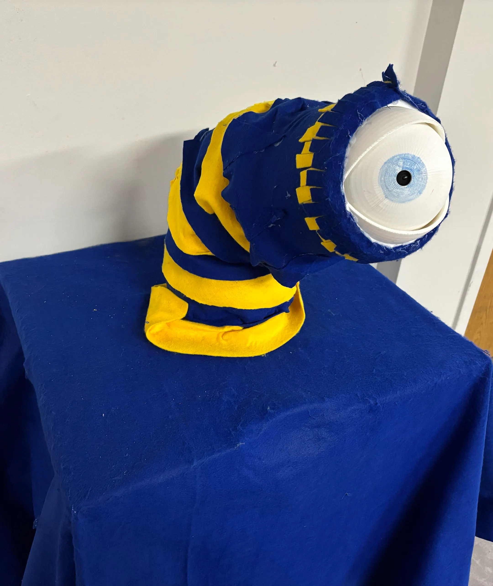
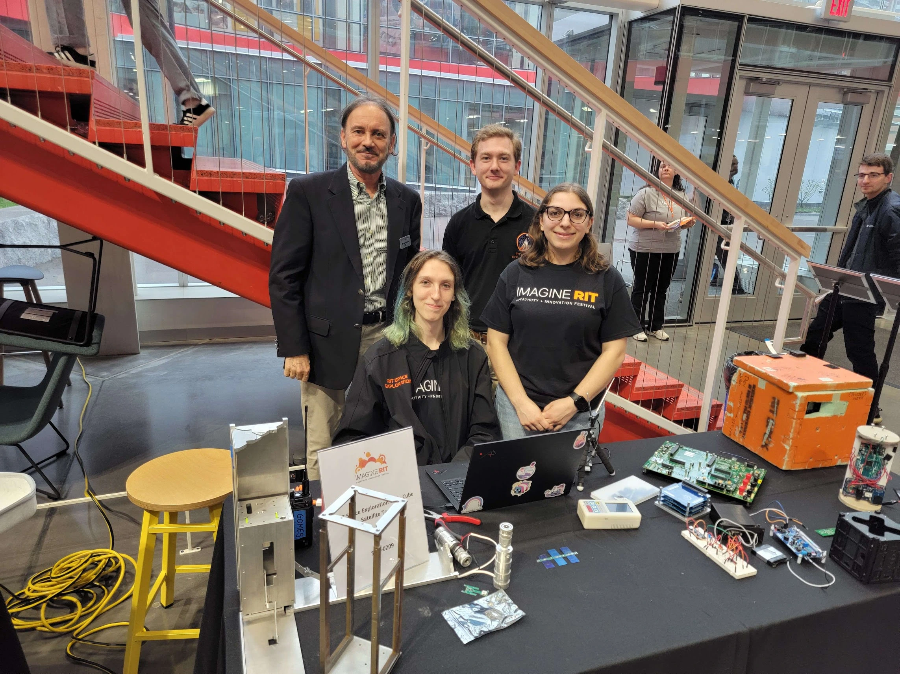
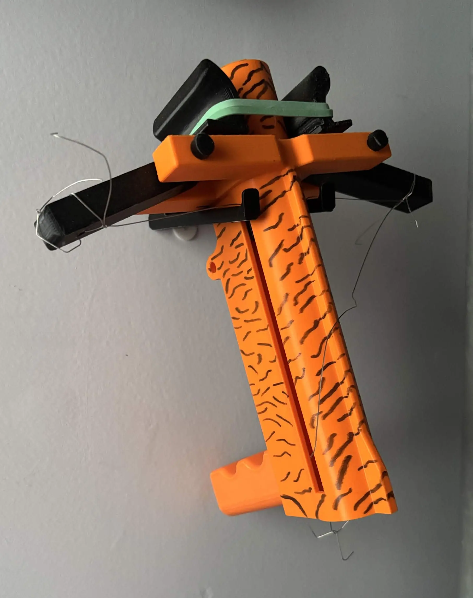
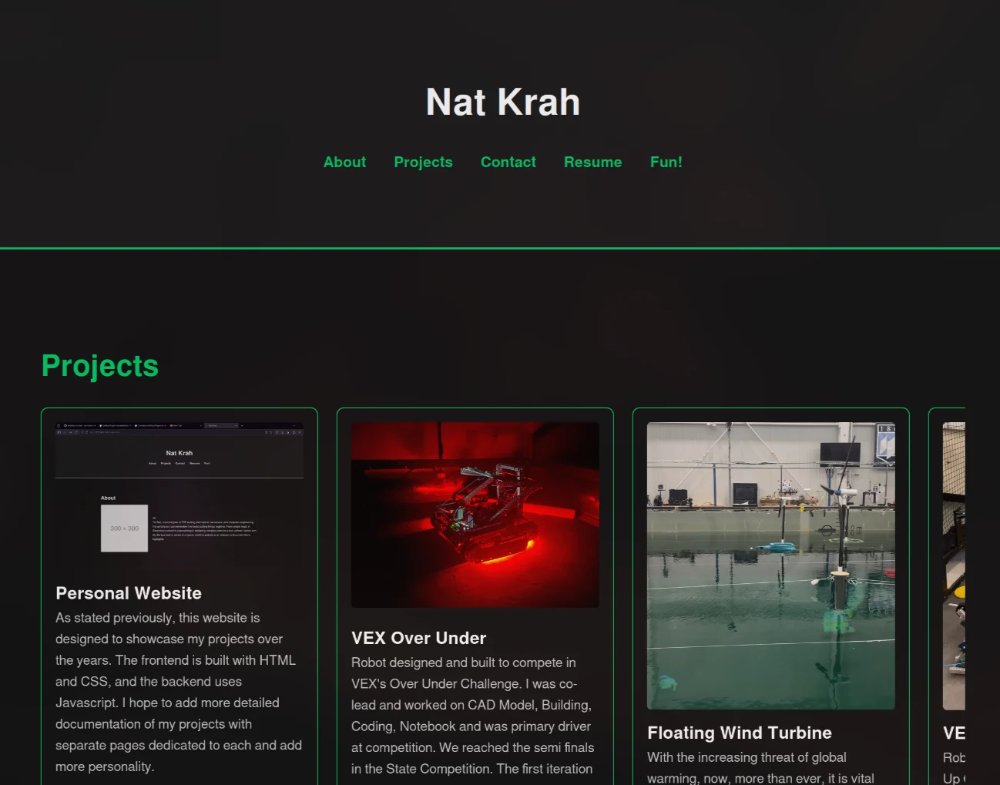
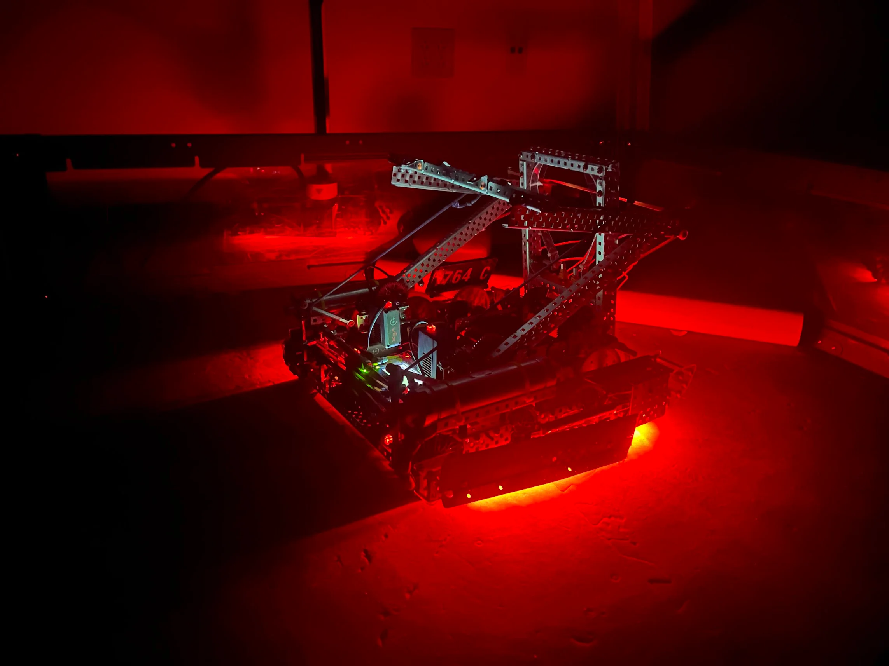
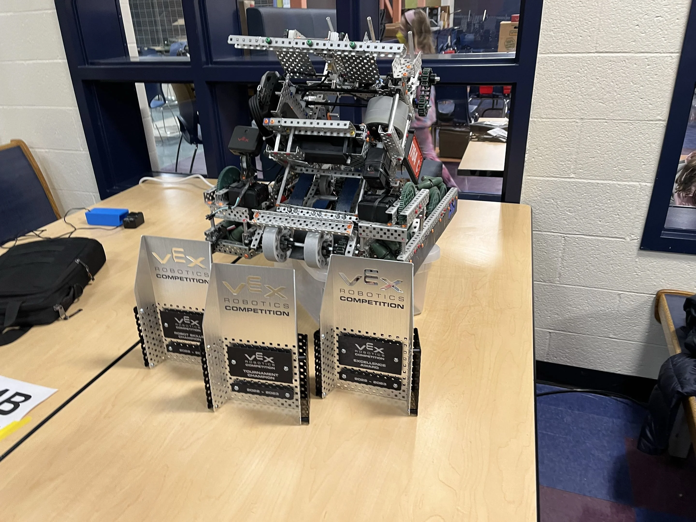
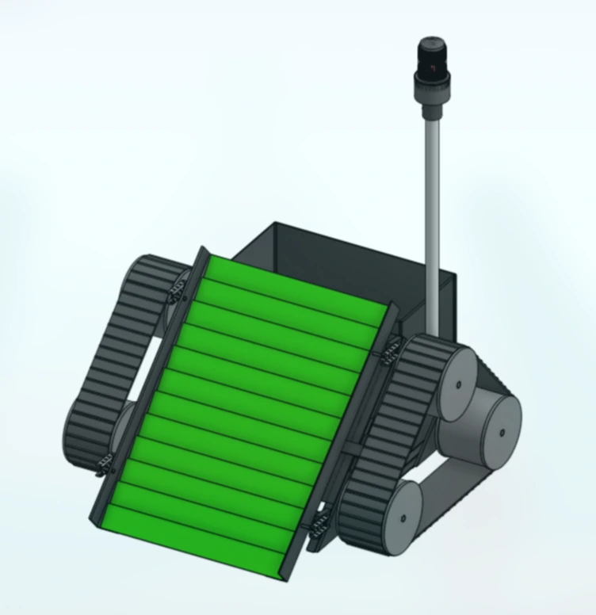

Projects
A glimpse into what I do
The "All Seeing Eye" is a soft-body robotics tentacle that uses computer vision to track and face people as they pass.
As project lead I reorganized efforts for a complete redesign of the tentacle structure, implementing the first design to work since the project's conception in 2022.
Outside of leadership, I focused my efforts on perfecting the eye structure and writing controls code.
As lead I organized meetings, created timelines, ordered parts, and negotiated with RIT for a table at Maker Fair and Imagine RIT.
The tentacle consists of 8 identical plates stacked on each other, each section separated by a 3D-printed TPU part.
To move the tentacle it is pulled by three wires connected to steppers.
The eye, attached to the final plate, can move independently of the tentacle and has a set of eyelids to blink.
The tentacle, eye, and camera are all connected to a Raspberry Pi that uses a Python script to read the camera feed, run a computer vision model, and control the movement of each section.

All Seeing Eye preparing for Imagine RIT
SPEX CubeSat
In CubeSat we were exploring radiation deflection methods in search of lighter and cheaper ways to protect electronic components and astronauts.
We were working on the design and construction of a small 1U CubeSat with several radiation sensors to prove mission success and get baseline data before expanding to a full research satellite.
I served as payload lead, organizing efforts to design custom radiation detectors that would integrate within the CubeSat.
As payload lead I made sure we were on pace with the larger team.
With little experience in PCB design and radiation, I taught myself KiCad, elementary circuits, and the core concepts of radiation physics.
Using this knowledge I trained my peers.
The payload board consists of three main sections: the controller, the scintillating counter, and the Geiger counter.
To record each event, compile the results, and manage the data, we use an Arduino Nano, and on the final board would simply use the ATmega328.
The chip connects to the greater CubeSat using a CAN bus.
The Geiger counter followed a standard low-power handheld setup and the scintillating counter was modeled after Cosmic Watch's desktop muon detector.

CubeSat at Imagine RIT
Strengths Ballista
I worked in a group with three other engineers to design a small 3D-printed pumpkin-launching device.
I was responsible for 3D printing, preparing the ballista for launch, and assisted extensively with the CAD design in OnShape.
We applied strength lecture and lab concepts along with Ansys analysis to conduct a thorough analysis of the ballista.
No part of it broke even when subjected to over 100 lbs of force.
Our design was in the top 3 out of 36 teams for both range and strength-to-weight ratio.

Final ballista design
Personal Website
Github
I developed this website as a complete redesign of my previous portfolio, created in the summer of 2025.
Both were designed to showcase my projects over the years as I've developed technically, and were built from the ground up using HTML, CSS, and JavaScript.
I chose to write the code myself, rather than use a website builder, because I wanted to understand the inner workings of webpages.
I want to know as much of the technical world around me as possible.
It has been fascinating to peer behind the front of websites and understand how elements are created and modified.

Old homepage
Vex Over Under
Documentation
VRC is the world's largest competitive robotics league.
In my senior year of high school I co-led my robotics team to the state semi-finals.
My primary focus outside of strict managerial tasks was prototyping, design work, writing controls code, and documentation.
As co-lead I trained underclassmen in CAD, C++, and machining, and created organizational documents and meetings outside of regular times to ensure readiness for competition.
I wrote over 100 pages of our ~170-page engineering notebook, which can be found here.
Each part was designed in OnShape; prototype parts were 3D printed, and final precision parts were run off a 3-axis CNC mill, operated by me.
The first iteration of the robot was small (under six inches tall) and featured a pneumatic two-speed transmission between the catapult and drive.
This allowed us to share power between the two systems and granted us both a fast, powerful drive and a powerful catapult.
It had an intake to pick up and manipulate individual game elements, wings to push large quantities of game elements, and sleds to pop the base over the center barrier.
The second iteration was much taller, sitting at ~11 inches when folded and ~36 inches when blocking.
This iteration utilized a raised puncher to launch triballs across the field, a pneumatic blocker to block other teams from launching triballs, and a more effective intake, sleds, and wings.
It was designed around elevating to a B-tier, but the robot was simply too heavy for the lifting mechanism.

Robot v1 with red LEDs
Floating Wind Turbine
After passing several key climate change tipping points, now more than ever it is vital that we work to build clean and reliable energy sources.
UMaine has organized efforts to encourage students to create new methods of supporting wind turbines for further development in the Gulf of Maine.
We have a massive resource which could be used to power a substantial portion of Maine.
A group of friends and I decided to compete in UMaine's competition.
We designed a spar-style wind turbine base. My work focused on creating several prototypes and applying hydrostatic fluid principles to find the optimal height, width, and weight ratio for maximum stability.
Competing at UMaine's Windstorm Challenge
Vex Spin Up
Competition
VRC is the world's largest competitive robotics league.
In 2022, my team made it to the state semi-finals with a win rate of 92 percent (24 wins, 2 losses).
My main responsibilities focused on storing discs, expansion, and documentation.
This was the first year that my team conducted proper documentation and I spearheaded this initiative.
With success and momentum from the previous year, we wanted every opportunity we could use to succeed, and one criterion to push forward was proper documentation.
Our first design featured a top-loading hopper, 3000 rpm flywheel, and a mecanum drive for strafing.
It could shoot across the field but struggled shooting up close, and the intake consistently clogged.
Our second iteration featured a bottom-loading hopper, 4-wheel intake, string launcher, sleds (for pushing discs), and custom odometry for position tracking.
This robot was significantly more competitive and the one we used to win the majority of our matches.

Robot with awards from one competition
Chime Machine
In my engineering design tools class, a group of engineers and I were tasked with designing a machine to play "Fallen Down" by Toby Fox.
The design consisted of two separate playing mechanisms: a cart suspended and moved over the set of chimes, and two hammers resting on cams.
My main responsibility was building the frame and writing the code.
The frame would have been fairly simple if it didn't need to withstand the force of the suspended cart.
My design used custom laser-cut pieces that secured larger structural beams.
The code was written in C++. The cart position was tracked with a potentiometer and used a custom PID loop.
Our machine achieved a perfect score in design, execution, and functionality.
Final chime machine
Sandy the Beach Cleanup Robot
Challenged with designing a robot to help the environment using COTS and VEX materials. My robotics team and I decided to focus on beach trash. Beach cleanliness significantly impacts local wildlife and can introduce large quantities of trash into the oceans. I focused on designing the sifting mechanism and the removable trash bin.

CAD view 1